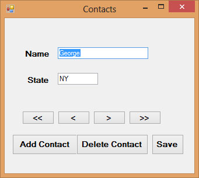

Visual Studio 2013 Lesson 35: Working with Databases- Browsing and Editing
[Lesson 34] << [Contents] >> [Lesson 36]
In preceding lessons, you have learned how to connect to a database as well as filling up the table with data in Visual Basic 2013, now you shall learn how to manipulate the data in the database. Manipulating data means adding news records, editing records, deleting records, browsing records and more.
35.1 Browsing Records
In previous lesson, we have learned how to display the first record using the showRecords sub procedure. In this lesson, we will create command buttons and write relevant codes to allow the user to browse the records forward and backward as well as fast forward to the last record and back to the first record.The first button we need to create is for the user to browse the first record. We can use button’s text << to indicate to the user that it is the button to move to the first record and button’s text >> to move to the last record. Besides we can use button’s text < for moving to previous record and button’s text > for moving to next record.
MyRowPosition = 0
Me.showRecords()
The code for moving to previous record is:
If MyRowPosition > 0 Then
MyRowPosition = MyRowPosition – 1
Me.showRecords()
End If
The code for moving to next record is:
If MyRowPosition
< (MyDataTbl.Rows.Count – 1) Then
MyRowPosition = MyRowPosition + 1
Me.showRecords()
End If
The code for moving to last record is:
If MyDataTbl.Rows.Count >
0 Then
MyRowPosition = MyDataTbl.Rows.Count – 1
Me.showRecords()
End If
35.2 Editing, Saving, Adding and Deleting Records
You can edit any record by navigating to the record and change the data values. However, you need to save the data after editing them. You need to use the update method of the SqlDataAdapter to save the data. The code is:
MyDataTbl.Rows(MyRowPosition)(“ContactName”) = txtName.Text
MyDataTbl.Rows(MyRowPosition)(“state”) = txtState.Text
MyDatAdp.Update(MyDataTbl)
End If
You can also add new record or new row to the table using the following code :
Dim MyNewRow As
DataRow = MyDataTbl.NewRow()
MyDataTbl.Rows.Add(MyNewRow)
MyRowPosition = MyDataTbl.Rows.Count – 1
Me.showRecords()
The code above will present a new record with blank fields for the user to enter the new data. After entering the data, he or she can then click the save button to save the data.
Lastly, the user might want to delete the data. The code to delete the data is:
If MyDataTbl.Rows.Count
<> 0 Then
MyDataTbl.Rows(MyRowPosition).Delete()
MyDatAdp.Update(MyDataTbl)
MyRowPosition = 0
Me.showRecords()
End If
The Visual Studio 2013 database program interface is shown below:
The Code
Public Class Form1
Private MyDatAdp As New SqlDataAdapter
Private MyCmdBld As New SqlCommandBuilder
Private MyDataTbl As New DataTable
Private MyCn As New SqlConnection
Private MyRowPosition As Integer = 0
Private Sub Form1_FormClosed(sender As Object, e As FormClosedEventArgs) Handles Me.FormClosed
MyCn.Close()
MyCn.Dispose()
End Sub
Private Sub Form1_Load(sender As Object, e As EventArgs) Handles MyBase.Load
MyCn.ConnectionString = “Data Source=TOSHIBA-PC\SQL2012;
AttachDbFilename=C:\Program Files\Microsoft SQL
Server\MSSQL11.SQL2012\MSSQL\DATA\Test.mdf; ” & _
“User Instance=True;Integrated Security=SSPI”
MyCn.Open()
MyDatAdp = New SqlDataAdapter(“Select* from
Contacts”, MyCn)
MyCmdBld = New SqlCommandBuilder(MyDatAdp)
MyDatAdp.Fill(MyDataTbl)
Dim MyDataRow As DataRow = MyDataTbl.Rows(0)
Dim strName As String
Dim strState As String
strName = MyDataRow(“ContactName”)
strState = MyDataRow(“State”)
TxtName.Text = strName.ToString
TxtState.Text = strState.ToString
Me.showRecords()
End Sub
Private Sub showRecords()
If MyDataTbl.Rows.Count = 0 Then
txtName.Text = “”
txtState.Text = “”
Exit Sub
End If
txtName.Text =
MyDataTbl.Rows(MyRowPosition)(“ContactName”).ToString
TxtState.Text = MyDataTbl.Rows(MyRowPosition)(“State”).ToString
End Sub
Private Sub BtnMoveFirst_Click(sender As Object, e As
EventArgs) Handles BtnMoveFirst.Click
MyRowPosition = 0
Me.showRecords()
End Sub
Private Sub BtnMovePrev_Click(sender As Object, e As
EventArgs) Handles BtnMovePrev.Click
If MyRowPosition > 0 Then
MyRowPosition = MyRowPosition – 1
Me.showRecords()
End If
End Sub
Private Sub BtnMoveNext_Click(sender As Object, e As
EventArgs) Handles BtnMoveNext.Click
If MyRowPosition < (MyDataTbl.Rows.Count – 1) Then
MyRowPosition = MyRowPosition + 1
Me.showRecords()
End If
End Sub
Private Sub BtnMoveLast_Click(sender As Object, e As
EventArgs) Handles BtnMoveLast.Click
If MyDataTbl.Rows.Count > 0 Then
MyRowPosition = MyDataTbl.Rows.Count – 1
Me.showRecords()
End If
End Sub
Private Sub BtnAdd_Click(sender As Object, e As
EventArgs) Handles BtnAdd.Click
Dim MyNewRow As DataRow = MyDataTbl.NewRow()
MyDataTbl.Rows.Add(MyNewRow)
MyRowPosition = MyDataTbl.Rows.Count – 1
Me.showRecords()
End Sub
Private Sub BtnDelete_Click(ByVal sender As Object,
ByVal e As EventArgs) Handles BtnDelete.Click
If MyDataTbl.Rows.Count <> 0 Then
MyDataTbl.Rows(MyRowPosition).Delete()
MyRowPosition = 0
MyDatAdp.Update(MyDataTbl)
Me.showRecords()
End If
End Sub
Private Sub BtnSave_Click(ByVal sender As Object, ByVal e As EventArgs) Handles BtnSave.Click
If MyDataTbl.Rows.Count <> 0 Then
MyDataTbl.Rows(MyRowPosition)(“ContactName”) = TxtName.Text
MyDataTbl.Rows(MyRowPosition)(“state”) = TxtState.Text
MyDatAdp.Update(MyDataTbl)
End If
End Sub
End Class

Figure 35.1